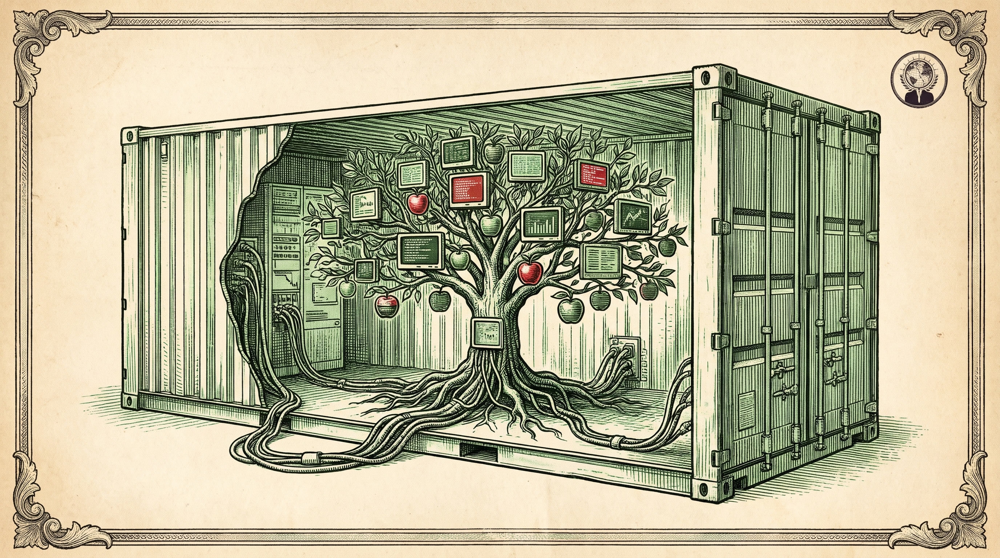
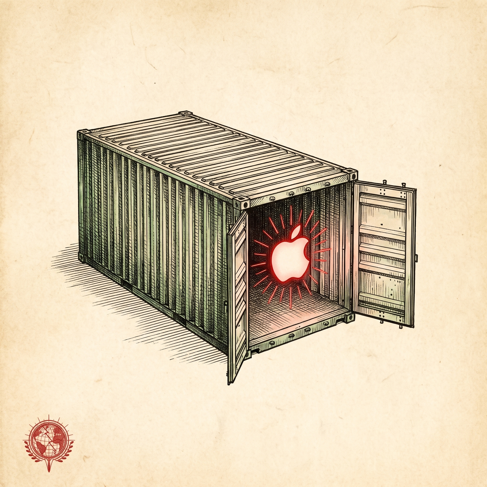
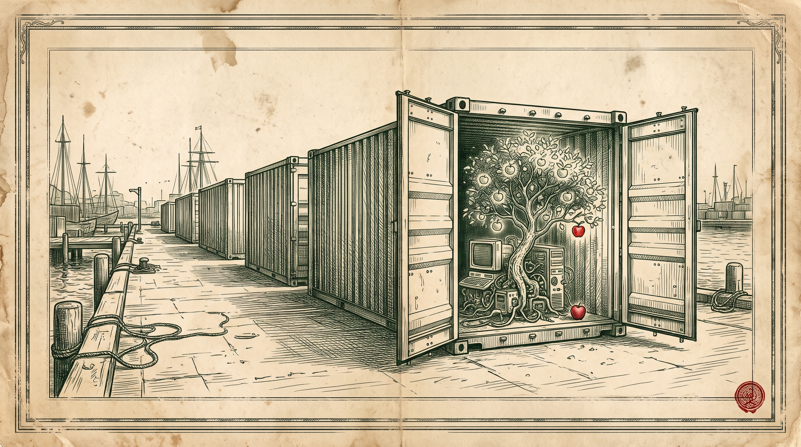

Fig. I · The container, opened


Run Mac OS X in Docker, with near-native performance. A field plate of the project by Sick.Codes, kept in my fleet.
The repositoryThe specimen commandCatalogue of releases
The README states the whole observation in one line: run Mac OS X in Docker with near-native performance, X11 forwarding, iMessage security research, and iPhone USB working, macOS in a Docker container. It also names the second use plainly: conduct security research on macOS using both Linux and Windows. I keep this fork in my fleet for exactly that second use, and I built this page from the repository itself.
Plate I · The specimen
Docker-OSX packages a macOS virtual machine, running on QEMU and KVM, inside a Docker container. The project is maintained by Sick.Codes, and the README gives credit where the structure rests: OSX-KVM by kholia upstream, the KVM-OpenCore fork, and the OpenCore bootloader from the Acidanthera team.

Plate II · Catalogue
The quick start offers one Docker image, sickcodes/docker-osx:latest, told apart by the SHORTNAME setting. The releases named in the README:
| Release | Version | SHORTNAME |
|---|---|---|
| Catalina | 10.15 | catalina |
| Big Sur | 11 | big-sur |
| Monterey | 12 | monterey |
| Ventura | 13 | ventura |
| Sonoma | 14 | sonoma |
| Sequoia | 15 | sequoia |
Plate III · Method
For Catalina, the quick start in the README reads, in full:
docker run -it \
--device /dev/kvm \
-p 50922:10022 \
-v /tmp/.X11-unix:/tmp/.X11-unix \
-e "DISPLAY=${DISPLAY:-:0.0}" \
-e SHORTNAME=catalina \
sickcodes/docker-osx:latestField requirements, from the same README: 20GB or more of disk space for a bare minimum installation, 50GB if using Xcode; virtualization enabled in the BIOS settings; and an x86_64 KVM-capable host.
Plate IV · Capabilities